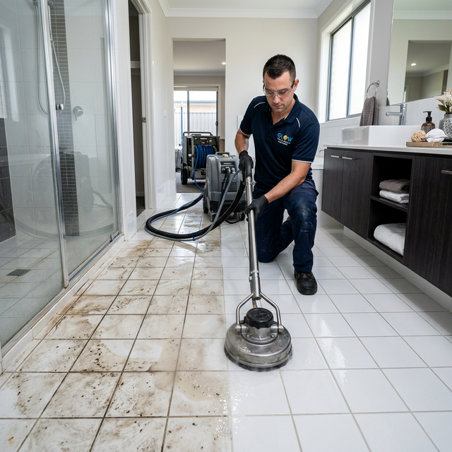
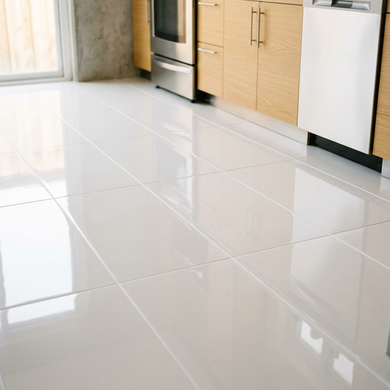
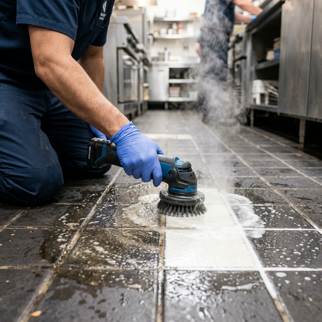

Professional Tile & Grout Restoration Services by BABA Cleaning
Are your tiles looking dull and your grout lines stained and discoloured? Over time, dirt, grime, mould, and bacteria build up in tile surfaces and grout lines, making them look unsightly and unhygienic. At BABA Cleaning, our professional tile and grout cleaners in Melbourne use advanced steam cleaning and high-pressure extraction methods to restore your tiles and grout to their original sparkling condition. Whether it's your kitchen, bathroom, laundry, or outdoor patio, our experienced team delivers outstanding results every time.


Tiles are one of the most durable flooring options, but without regular professional cleaning, grout lines can harbour mould, mildew, and deep-set stains that ordinary mopping cannot remove. Our tile and grout cleaning specialists use powerful truck-mounted equipment and eco-friendly cleaning solutions to penetrate deep into grout lines and tile surfaces, extracting years of built-up grime.
We provide comprehensive tile and grout cleaning for all areas of your home or commercial property. Our services cover a wide range of tile types and environments:
Our professional tile and grout cleaning process involves:
We recommend professional tile and grout cleaning every 12 to 18 months for residential properties and every 6 to 12 months for commercial spaces. Regular professional cleaning prevents mould growth and extends the life of your tiles and grout.
Yes! Our tile and grout cleaning team is experienced with all tile types including porcelain, ceramic, natural stone (marble, travertine, slate), terracotta, and quarry tiles. We adjust our cleaning method and products to suit each tile type for the best results.
Grout sealing involves applying a protective barrier to grout lines after cleaning. This prevents moisture, dirt, and stains from penetrating the grout, keeping it cleaner for longer. We highly recommend grout sealing, especially in wet areas like bathrooms and kitchens.
Absolutely. We use eco-friendly, non-toxic cleaning products that are completely safe for your family, children, and pets. Our cleaning methods are designed to be effective while remaining environmentally responsible.
Yes! We offer free, no-obligation quotes for all tile and grout cleaning services. Simply give us a call or fill out our online enquiry form, and we'll provide you with a competitive price based on the size and condition of your tiled area.
Ready to restore your tiles and grout to their original brilliance? Contact BABA Cleaning now for a free consultation and competitive quote. Our professional tile and grout cleaning team is ready to transform your floors!